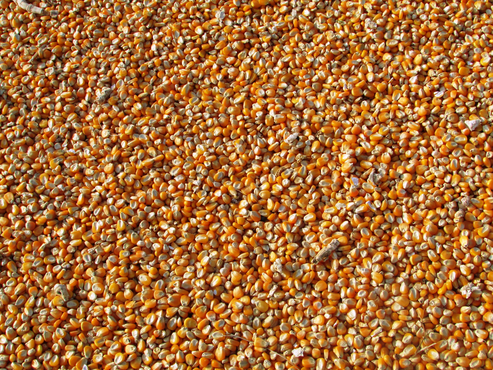
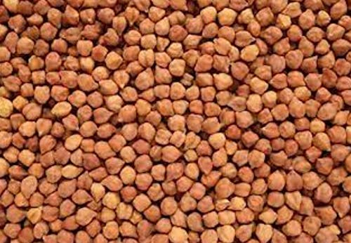
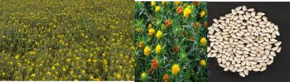
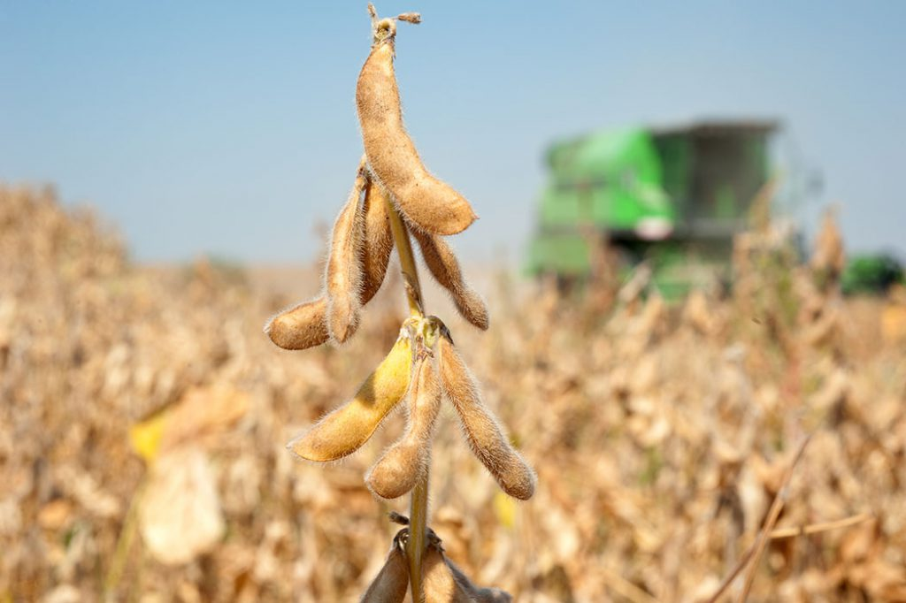
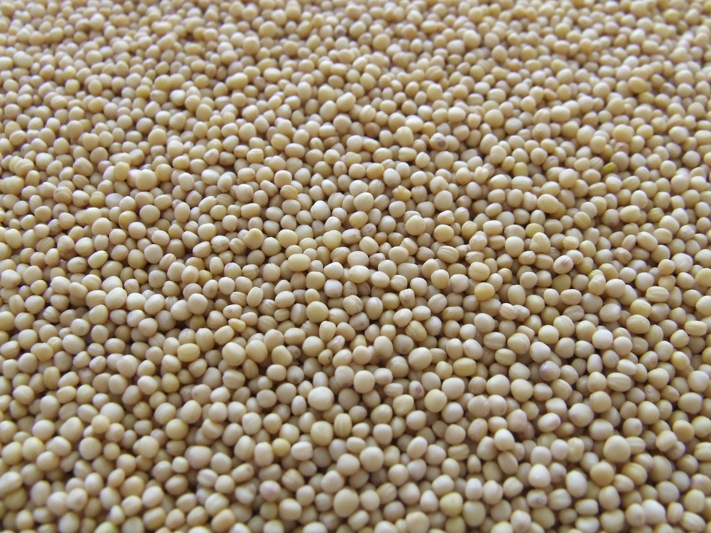

SRI ANJANEYA HARVESTER
vill: Mallapur, Mdl: Kothur, District : Ranga Reddy
Home
About Us
Charges
Contact Us
We Started This Work In the year 2007
The Crops Which Can be cut by our Harvesters are
maize

Bengal gram

jowar
Saw flower

Soya Bean
 